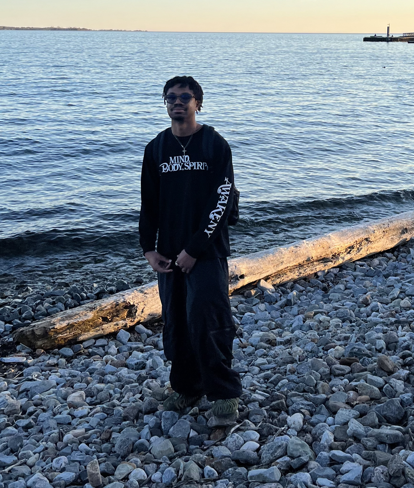

About Me
Hi, I'm Chuka, a software developer currently studying computing at Queen’s University.
I enjoy building software that blends clean design with practical functionality. I’m especially interested in creating digital experiences that are useful, visually appealing, and easy to use.
My background includes software development, interface design, and building projects that solve real problems while still feeling polished and modern.
Hobbies
Outside of tech, I enjoy staying active, being creative, and expressing myself through different interests.
I hit the gym regularly, I’m into fashion and styling outfits, and I also enjoy making beats on FL Studio in my free time.
I’m a huge Arsenal supporter, and I enjoy playing soccer as a left-back or center-back whenever I get the chance.
